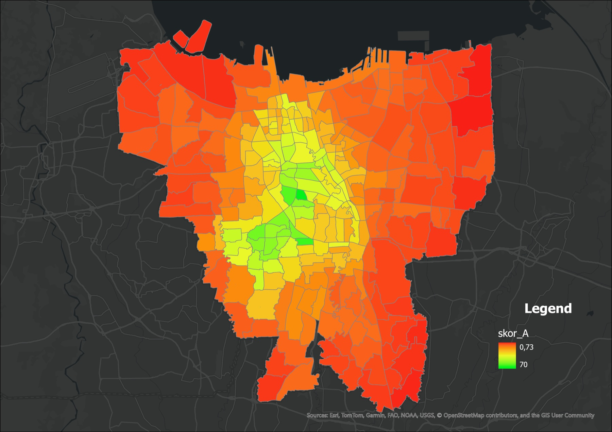
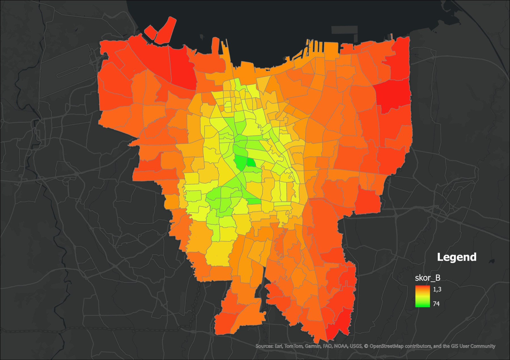
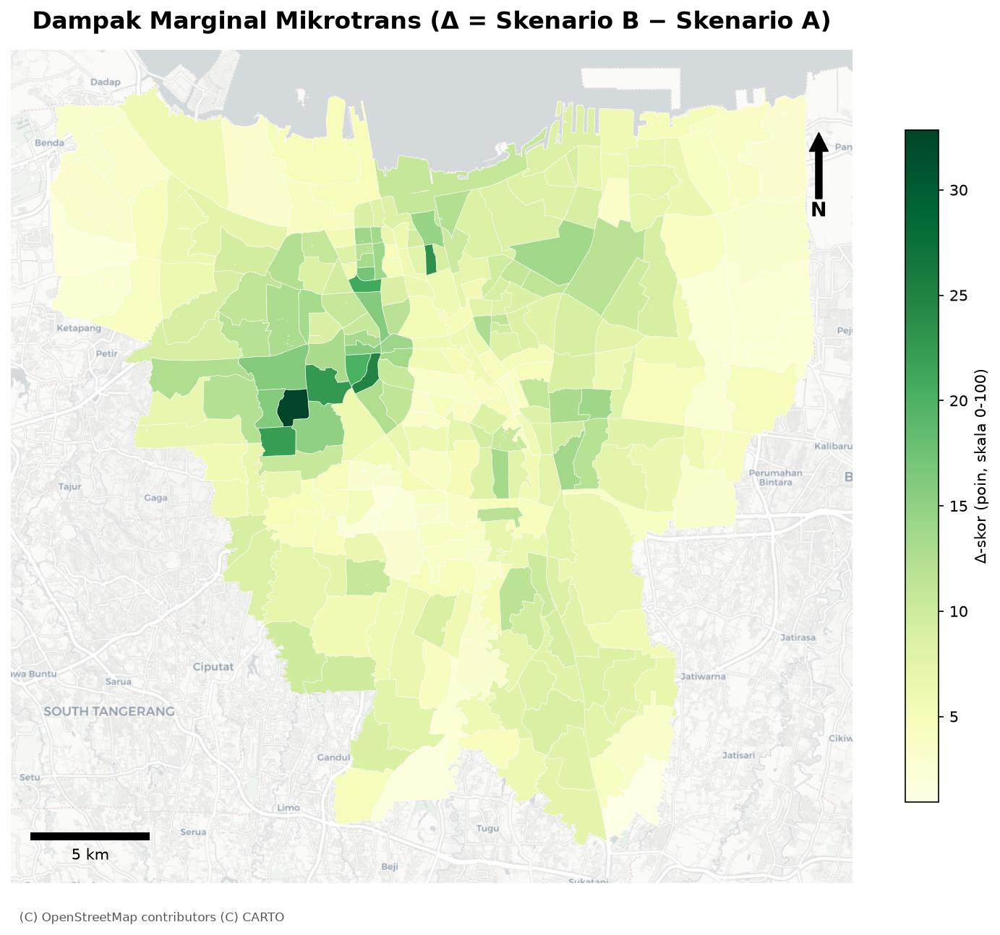
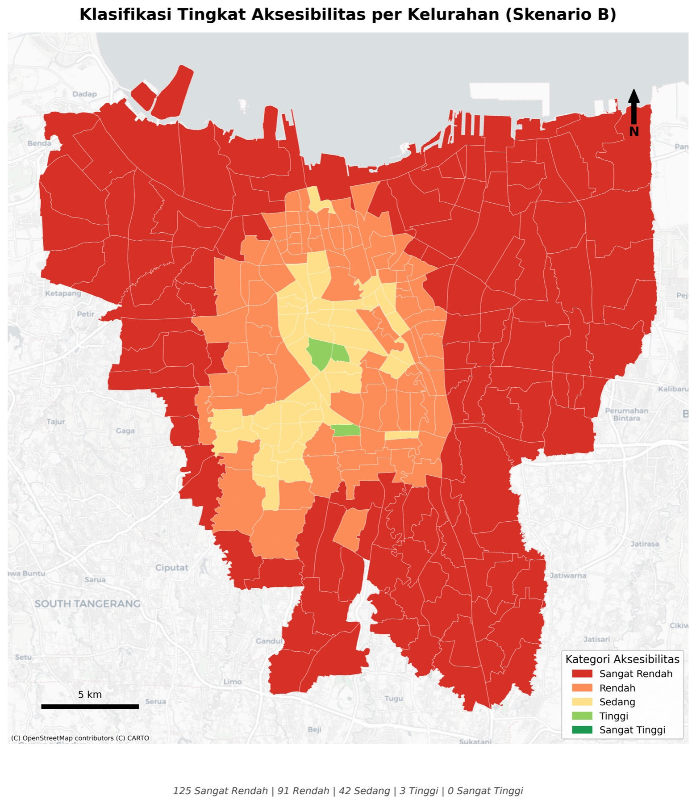
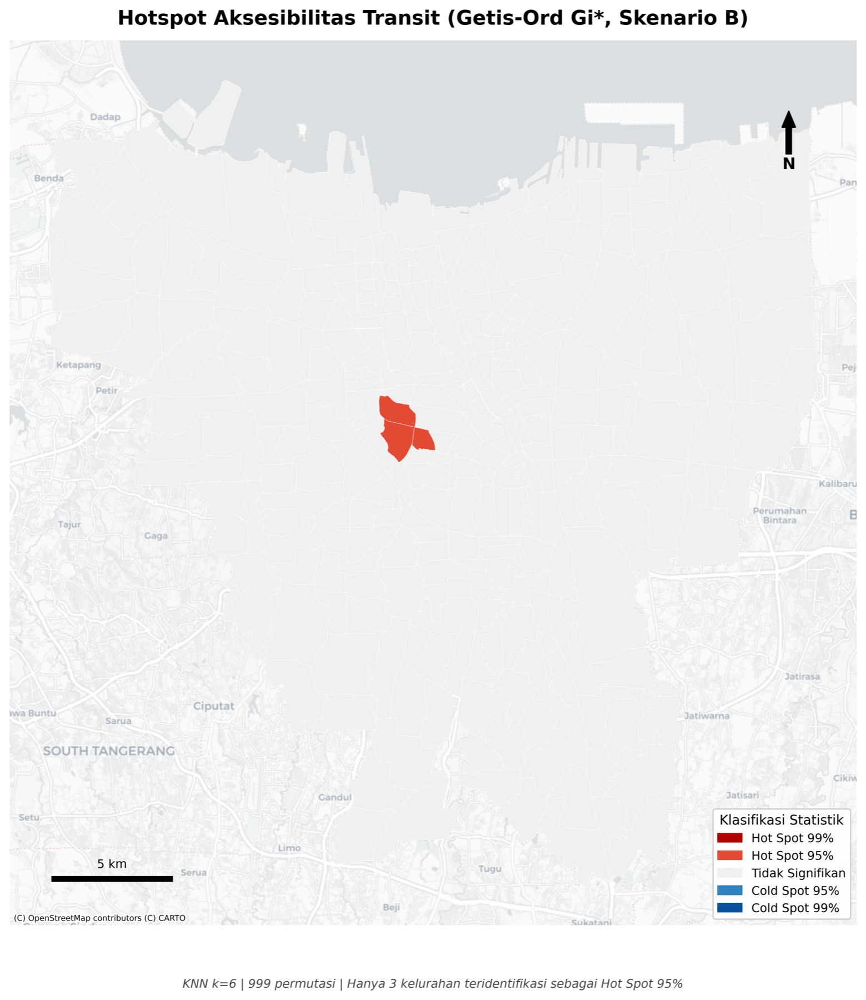
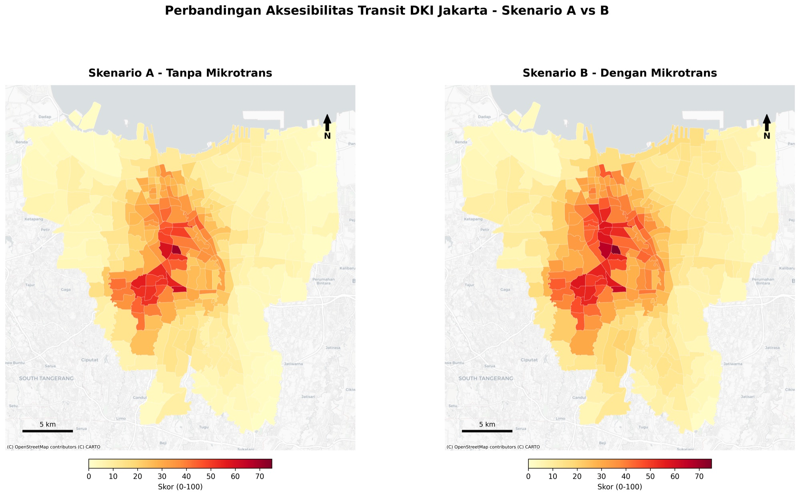

Objective
This study answers a spatial-planning & transport question: how evenly can DKI Jakarta residents reach 27 categories of essential urban facilities using only public transit (BRT TransJakarta, MRT, LRT, KRL, Mikrotrans/Jaklingko feeders) within a 45-minute limit, and what is the marginal contribution of the Mikrotrans feeder network?
Four operational objectives:
- Measure the Transit Accessibility Index (TAI) per urban village based on AHP-weighted cumulative opportunities.
- Compare two network scenarios to quantify the marginal accessibility gain (Δ-score) of feeder integration.
- Identify statistically significant accessibility hotspots & cold spots.
- Provide a quantitative evidence base on spatial equity for spatial planning (RDTR/RTRW) and transit-oriented development.
Policy audience: Bappeda DKI Jakarta, the Transportation Agency (Dishub), and PT TransJakarta.
Methodology
Conceptual framework. The study adopts place-based accessibility (Geurs & van Wee, 2004), which decomposes accessibility into four components: land use (where opportunities are located), transportation (how the network connects them), temporal (when service actually runs), and individual (who is traveling). The first three are modeled explicitly; the fourth is held constant as an average adult traveler. Among the four families of accessibility metrics, the cumulative opportunities measure was chosen over gravity-decay and utility-based alternatives because it answers the question policymakers actually ask, “how many facilities can a resident reach within 45 minutes?”, and because every assumption behind it can be audited.
Origins and spatial units. The origin set is the 2,713 RW centroids, the smallest administrative unit with reliable boundaries in Jakarta. Scoring at RW level and then averaging up to the 261 urban villages reduces the Modifiable Areal Unit Problem (MAUP): each village score is built from many small samples instead of one arbitrary point. Every centroid also carries its RDTR zoning attribute from a spatial overlay, so accessibility can later be read against land-use designations.
Destinations and AHP weighting. A hospital does not matter the same as an ATM, so the 27 destination categories are weighted with the Analytic Hierarchy Process. Categories are compared pairwise on Saaty’s 1–9 importance scale; the principal eigenvector of the comparison matrix yields the weights, and the Consistency Ratio checks that the judgments do not contradict each other. The result puts Health at 35.0%, Education 19.6%, Economy 11.2%, with smaller shares for social, public-service, financial, and strategic-transport categories; CR = 0.0578, below the 0.10 threshold, so the matrix is internally consistent. Rail stations were deliberately excluded as destinations: the network cannot also be the prize, or the score becomes circular.
Routing model. Travel times come from r5py, the Python interface to Conveyal’s R5, the reference engine for time-dependent multimodal routing on GTFS. The mode is TRANSIT + WALK, departing Tuesday 07:00 (a typical peak) with a 60-minute departure window. The window matters: R5 averages over many departure times, so a village’s score does not hinge on luckily catching a single bus, the “first-bus bias” documented by Owen & Levinson (2015). The matrix covers every RW × destination pair twice, once per network: Scenario A (149 backbone BRT routes + MRT + LRT + KRL) and Scenario B (the full 243-route Jaklingko network, including 94 Mikrotrans feeder routes, plus rail).
Scoring and comparison. For each RW and category, the count of reachable destinations is multiplied by the category’s AHP weight; the weighted sum is normalized 0–100 against the highest raw score observed anywhere, and RW scores are averaged to villages. Because both scenarios share identical origins, destinations, weights, and parameters, the difference Δ = B − A cleanly isolates what the feeder network adds.
Spatial statistics and validation. Getis-Ord Gi* (k = 6 nearest neighbours, 999 permutations) tests where high or low scores cluster more strongly than chance would allow, separating real spatial structure from noise. The whole pipeline is then rerun at 30- and 60-minute thresholds, and Spearman rank correlations across the three runs test whether the village ranking, the part that drives policy, depends on the 45-minute choice. Each methodological component was cross-checked against the accessibility literature (Journal of Transport Geography; Transportation Research Part A) before being adopted.
Data Used
| Component | Detail | Source |
|---|---|---|
| Origin | 2,713 RW centroids + RDTR zone overlay | BPS-DKI, DKI RDTR Regulation 2022 |
| Destinations | 27 categories (≈ 18,500 points) | Kemenkes, Dapodik, Pasar Jaya, Bank DKI, OSM, Kemenhub |
| Road network | dki_only.osm.pbf (69 MB) | OpenStreetMap (Apr 2024) |
| Transit GTFS | Scenario A & B (BRT, MRT, LRT, KRL, Mikrotrans) | TransJakarta, KAI Commuter, MRT-J, LRT-J |
| Routing engine | r5py 0.1.x (R5 multimodal) | Conway et al. (2018) |
Analysis
AHP-weighted cumulative-opportunity scoring normalized to 0–100, then aggregated from RW to urban village. The Scenario A vs B comparison isolates the marginal impact of Mikrotrans, Getis-Ord Gi* detects significant clusters, and a Spearman test across 30/45/60-minute thresholds verifies rank stability.






Beyond the static maps, every raw input layer behind the study is open to explore — the full Jaklingko transit network (TransJakarta, Mikrotrans, MRT, LRT, KRL), administrative boundaries, RW origin points, and all 27 facility categories (~18,000 points) weighted in the AHP. The dashboard shows the source data only; no scores.
Results
- Extreme vertical inequality. The ratio of the highest score (Setia Budi 74.29) to the lowest (≈1.3) reaches 57×. Central & South Jakarta are 3–6× higher than North & East Jakarta.
- Mikrotrans = a significant but concentrated lever. Average score rises +4.74 points (+24.6%); 7 of the top 10 beneficiaries are in West Jakarta (Sukabumi Selatan +19.69). Mikrotrans works as a capillary network only where BRT/MRT corridors are already mature.
- Bottleneck = first/last-mile gap in the northern & eastern peripheries (Cipayung, Cilincing, Penjaringan, Marunda), scores < 10/100, effectively isolated.
- Exclusive hotspots. Only 3 statistically significant villages (the golden triangle Sudirman–Setia Budi–Mampang) → high accessibility is enclave-based.
- Robust results. Threshold sensitivity yields Spearman r = 1.00, ranks unchanged, only magnitudes.
| Statistic (n=261) | Score A | Score B | Δ |
|---|---|---|---|
| Mean | 19.27 | 24.01 | +4.74 |
| Median | 14.12 | 20.96 | +4.04 |
| Maximum | 69.82 | 74.29 | +19.69 |
Conclusion: even with the most complete transit network, DKI Jakarta’s accessibility ceiling stays below optimum (max 74.29/100) and remains starkly uneven, high accessibility is concentrated in a few central enclaves, while the northern and eastern peripheries are effectively isolated within a 45-minute transit budget. The Mikrotrans feeder delivers a measurable but geographically biased accessibility gain, strongest where BRT/MRT corridors are already mature, and this pattern is statistically robust to the choice of travel-time threshold (Spearman r = 1.00).
References
Anselin, L. (1995). Local Indicators of Spatial Association, LISA. Geographical Analysis, 27(2), 93–115.
Bhat, C., Handy, S., Kockelman, K., Mahmassani, H., Chen, Q., & Weston, L. (2000). Urban accessibility index: Literature review. Texas Department of Transportation.
Borghetti, F., Cerean, S., Petrenj, B., & Trucco, P. (2024). Accessibility Measures: A Review of Performance Indicators. ISPRS International Journal of Geo-Information, 13(12), 442.
Cervero, R. (2013). Linking urban transport and land use in developing countries. Journal of Transport and Land Use, 6(1), 7–24.
Conway, M. W., Byrd, A., & van Eggermond, M. (2018). Accounting for uncertainty and variation in accessibility metrics for public transport sketch planning. Journal of Transport and Land Use, 11(1), 541–558.
El-Geneidy, A., Levinson, D., Diab, E., Boisjoly, G., Verbich, D., & Loong, C. (2016). The cost of equity: Assessing transit accessibility and social disparity using total travel cost. Transportation Research Part A, 91, 302–316.
El-Geneidy, A., & Levinson, D. (2022). Does accessibility require mobility? Transport Reviews, 42(3), 273–292.
Getis, A., & Ord, J. K. (1992). The analysis of spatial association by use of distance statistics. Geographical Analysis, 24(3), 189–206.
Geurs, K. T., & van Wee, B. (2004). Accessibility evaluation of land-use and transport strategies. Journal of Transport Geography, 12(2), 127–140.
Hansen, W. G. (1959). How accessibility shapes land use. Journal of the American Institute of Planners, 25(2), 73–76.
Karami, A. (2017). Utilization of the Analytical Hierarchy Process to determine the criteria for transport planning. Transportation Research Part A, 103, 1–10.
Kwan, M.-P., & Weber, J. (2008). Scale and accessibility: Implications for the analysis of land use–travel interaction. Journal of Transport Geography, 16(2), 79–87.
Lucas, K., van Wee, B., & Maat, K. (2016). A method to evaluate equitable accessibility. Transportation, 43(3), 473–490.
Owen, A., & Levinson, D. (2015). Modeling the commute mode share of transit using continuous accessibility. Journal of Transport Geography, 47, 1–9.
Páez, A., Scott, D. M., & Morency, C. (2012). Measuring accessibility: positive and normative implementations of various accessibility indicators. Journal of Transport Geography, 25, 141–153.
Pereira, R. H. M., Schwanen, T., & Banister, D. (2017). Distributive justice and equity in transportation. Transport Reviews, 37(2), 170–191.
Pereira, R. H. M., Saraiva, M., Herszenhut, D., Braga, C. K. V., & Conway, M. W. (2021). r5r: Rapid Realistic Routing on Multimodal Transport Networks with R5 in R. Findings, 21262.
Saaty, T. L. (1977). A scaling method for priorities in hierarchical structures. Journal of Mathematical Psychology, 15(3), 234–281.
Saaty, T. L. (1980). The Analytic Hierarchy Process. McGraw-Hill, New York.
Sharma, G., & Patil, G. R. (2023). Urban spatial structure and equity dimensions of public transport accessibility. Journal of Transport Geography, 113, 103735.